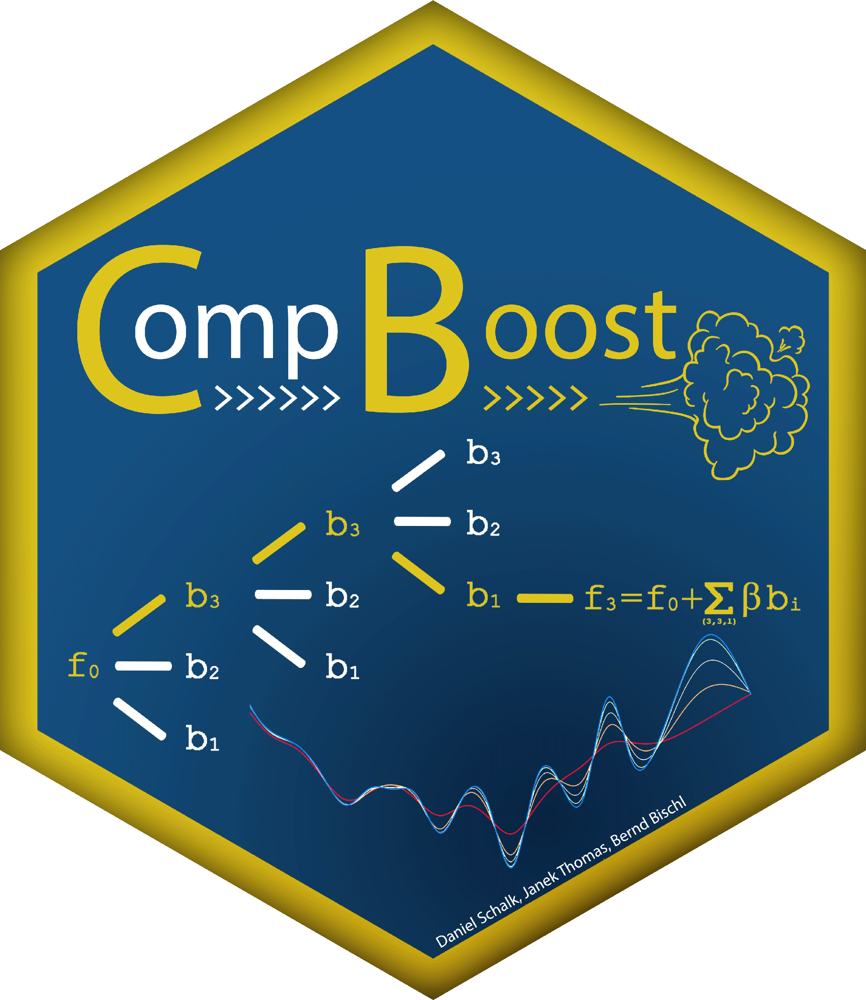

Classification component-wise boosting learner
mlr_learners_classif.compboost.RdSuper classes
mlr3::Learner -> compboost::LearnerCompboost -> LearnerClassifCompboost
mlr_learners_classif.compboost.Rdmlr3::Learner -> compboost::LearnerCompboost -> LearnerClassifCompboost